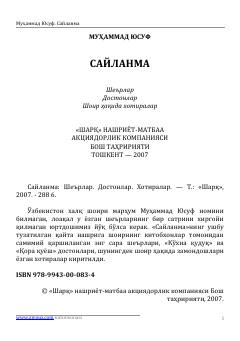

СO'zbekiston xalq shoiri Muhammad Yusufning mashhur she'rlari va dostonlari to'plami.
Ushbu saylanmaga O'zbekiston xalq шоири Муҳаммад Юсуфнинг халqimiz tomonidan sevilib o'qiladigan eng sara she'rlari, достонлари ҳамда шоир ҳақидаги хотиралар kiritilgan. Kitobda Vatan, muhabbat, xalq taqdiri va insoniy tuyg'ular yorqin misralarda tarannum etilgan. Asar keng kitobxonlar ommasiga mo'ljallangan bo'lib, o'zining samimiyligi va ravon tili bilan ajralib turadi.